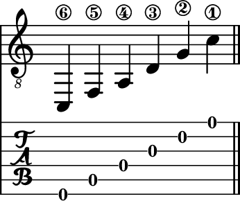
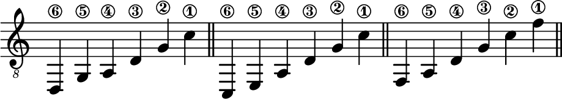
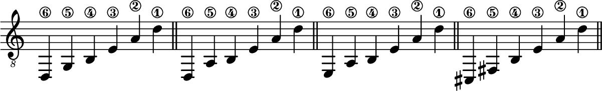
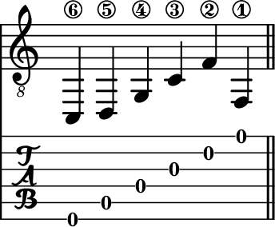
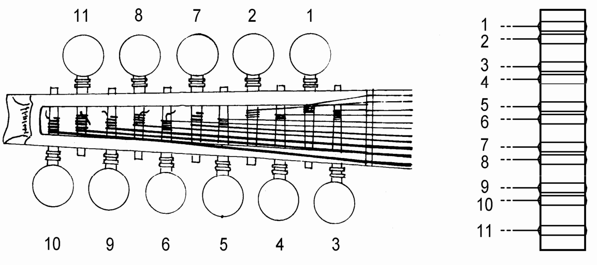
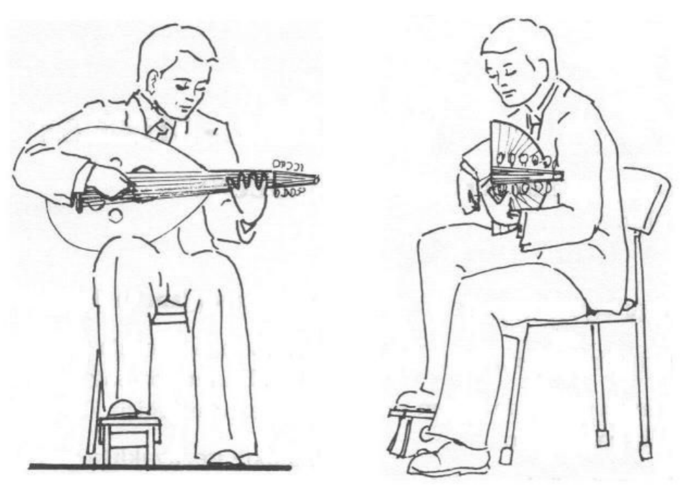

El ud
El ud es un cordófono de cuerda pulsada. El cuerpo del instrumento es piriforme y su mástil es corto. De la longitud total de la cuerda, un tercio se sitúa sobre el mástil y dos tercios sobre la caja (en la guitarra esta proporción es de una mitad sobre el mástil y otra mitad sobre la caja). El mástil carece de trastes, lo que permite el uso de microtonos, importantes dentro de la música árabe.
El ud suele tener once cuerdas, dispuestas en cinco grupos de dos cuerdas y un bordón simple. Este último también puede aparecer como cuerda doble, y existen asimismo uds con 10 (5 × 2) o 13 (6 × 2 + 1) cuerdas. Las cuerdas son de nailon, con entorchado metálico salvo en los dos pares más agudos.
La parte trasera del ud es redondeada. A diferencia de instrumentos como la guitarra, que presentan una única apertura en la tapa armónica, el ud suele tener tres de ellas: una central de mayor tamaño y dos menores. Tradicionalmente, se asocia la primera de ellas al sol, mientras que las dos restantes serían representaciones de la luna. Las aperturas pueden estar decoradas con rosetas talladas.
El nombre ud 1 proviene de la voz árabe al’ud, que significa «madera», en una referencia al material del que está construido el propio instrumento, o quizás al de las púas que se utilizaban para pulsar las cuerdas en sus orígenes, o tal vez el de la tapa armónica del instrumento, para diferenciarlo de otros similares en los que se utilizaba piel en lugar de madera. La etimología exacta es todavía hoy un tema controvertido.
La voz ud ha dado lugar a su vez a laúd, palabra con la cual se nombra un instrumento distinto aunque derivado del ud. Es por ello que también resulta habitual encontrar textos que se refieren al ud como laúd árabe.
Historia
Hay evidencias de la existencia de instrumentos de la familia del ud en Mesopotamia, en épocas anteriores al año 3000 a.C., originariamente con un número de cuerdas menor y siendo estas sencillas en lugar de dobles.
El antecesor directo del ud es probablemente el instrumento persa conocido como barbat, que se desarrollaría en el mundo islámico hasta conformar un primer instrumento con características similares al ud actual.
Con la conquista musulmana de la península ibérica, el ud llega al continente europeo, donde ya existían instrumentos similares tales como la pandura griega. Se convierte entonces en el instrumento principal de al-Ándalus, donde se utiliza fundamentalmente como acompañamiento para poemas recitados o cantados.
De entre los numerosos interpretes que desarrollan tanto el instrumento como la manera de tocarlo, destaca Abu l-Hasan Ali ibn Nafi (conocido con el sobrenombre de Ziryab), quien llega a la Península en el año 822. Ziryab fundaría el primer conservatorio del mundo árabe y aportaría un buen número de innovaciones musicales, entre las que se incluyen la adición de un quinto par de cuerdas al ud. En aquel entonces, el ud disponía de tan solo cuatro pares, que se identificaban con los cuatro humores (bilis negra, bilis amarilla, flema y sangre) y se pintaban de acuerdo con ellos. El nuevo par de cuerdas habría de representar el alma, bajo el razonamiento que los humores no pueden existir sin esta.
Ziryab introdujo, asimismo, las primeras púas (denominadas rishas) hechas con uñas, picos y, especialmente, plumas de águila, en detrimento de las púas de madera empleadas hasta ese momento. Estos materiales serán lo habitual hasta casi nuestros días.
El ud quedaría prohibido en la península una vez que se produce la caída de Granada, por considerarse un símbolo musulmán, y fue la vihuela la que tomó su lugar como instrumento principal. Los musulmanes exiliados llevaron consigo el instrumento al norte de África y Oriente Medio, donde seguiría siendo el principal medio de expresión musical.
La familia de instrumentos derivados o emparentados con ud es muy numerosa e incluye toda la amplia colección de laudes europeos, así como instrumentos similares a lo largo de Asia o Europa, tales como la pipa china.
Tipos de ud
Dos son los principales tipos de ud que pueden encontrarse en la actualidad: ud árabe y ud turco.
El ud árabe es generalmente de tamaño algo mayor que el turco, y su sonido más profundo y con menos sustain. Su construcción es más robusta, siendo un instrumento más pesado. Los pares de cuerdas se disponen en el ud árabe a una distancia algo mayor que en el ud turco.
La mayor diferencia, no obstante, reside en la afinación, que en el ud árabe es más grave que en el turco, en general un tono por debajo. Esta afinación, y el hecho de que se utilicen para ello cuerdas de mayor calibre, contribuye a su vez a esa sonoridad más robusta, en oposición al timbre más brillante del ud turco.
Pese a su nombre, el ud turco es un instrumento habitual en las músicas de otros países además de Turquía, y en especial en la música griega y de los países del Mediterráneo. Por su parte, el ud árabe predomina en Asia Occidental y en África del Norte.
La construcción del ud turco no presenta apenas variabilidad. Por el contrario, el diseño del árabe parece ser menos estricto, y sus medidas y configuración pueden diferir entre modelos o constructores.
En algunas regiones, existen subtipos particulares de la forma árabe. En Irak el ud presenta un puente flotante, lo cual le confiere un timbre distinto, menos característico que el del modelo árabe general, y que se asemeja más al de la guitarra. En Irán encontramos un subtipo conocido como ud persa, en realidad una reinvención del primitivo barbat (del cual deriva el ud).
Este libro se centra sobre el ud árabe, aunque es evidente que buena parte parte de las ideas aquí descritas pueden aplicarse también al ud turco. Los fundamentos teóricos presentados en el capítulo correspondiente son, asimismo, los de la música árabe, existiendo diferencias importantes en entre estos y los de la música turca, que no se tratan aquí.
El ud en la música árabe
El ud ha desempeñado diversos papeles a lo largo de la historia de la música árabe. Ello se debe tanto a la evolución que el instrumento y la música han experimentado como a la versatilidad del propio ud.
La función tradicional del ud ha sido el acompañamiento de la voz. Sus características hacen que sea un instrumento idóneo para esta tarea, ya que puede interpretar la melodía, y también, por su carácter percusivo al ser un instrumento de cuerda pulsada, es adecuado para marcar el ritmo.
Otra de las ventajas del ud como instrumento acompañante de la voz es que, por su propia naturaleza, permite que sea el propio cantante quien se acompañe a sí mismo, algo que no es posible o resulta poco ergonómico con otros instrumentos (véase el apartado [instrumentos] para saber más sobre los instrumentos árabes).
Además de acompañarse con el ud, el cantante puede, gracias a él, ocuparse de los interludios solistas o de las introducciones instrumentales que son habituales en la música árabe, frecuentemente improvisadas en gran medida.
El ud ha sido también el instrumento preferido por los principales compositores dentro de la música árabe, muchos de los cuales son a su vez grandes intérpretes. En este sentido, ocupa el lugar que el piano tiene en la música clásica occidental.
Como instrumento solista, el ud tuvo un papel importante durante el periodo de la dinastía abasida, pero quedó posteriormente relegado a su rol de acompañamiento. Este hecho se acentuó con la llegada del siglo xx, cuando la mayor difusión y popularización de las piezas vocales dio a estas aún más preponderancia en el repertorio musical árabe. El resurgimiento del ud como instrumento solista sucede a partir de 1936, cuando Şerif Muhiddin, udista turco, se hace cargo del conservatorio de Bagdad. Sus composiciones, que exploran el ud como instrumento solista y exigen del intérprete un alto grado de virtuosismo, devuelven el papel protagonista al ud. Algunos de sus alumnos más destacados se convertirán en solistas de renombre y continuarán su trabajo. El interés que aparece por la música oriental dentro del mundo occidental ayudará más adelante a asentar ese papel solista no solo del ud, sino también de otros instrumentos.
Estilos e intérpretes
Para entender y tocar el ud con una cierta solvencia, es imprescindible escuchar a sus principales intérpretes. La música árabe se transmite tradicionalmente de manera oral, y la notación musical es una herramienta incompleta para transmitir buena parte de sus elementos. Es mediante la escucha reiterada que se adquiere una expresividad natural, no a través del estudio, sino de la interiorización espontanea de sus formas y detalles, de la misma manera que sucede con un idioma.
Las siguientes son algunas de las principales escuelas o estilos que pueden encontrarse en la actualidad dentro de las músicas donde el ud juega un papel preponderante. Cada uno de estos estilos está asociado a una región geográfica y un contexto cultural. Los intérpretes que se mencionan son, en la mayoría de casos, responsables de la forma actual de dicho estilo, así como de lo que podría considerarse el repertorio fundamental, que cualquier músico de ud competente ha de conocer.
A día de hoy, todos estos estilos han recibido influencias externas, especialmente occidentales, y sus intérpretes contemporáneos combinan elementos tradicionales con otros provenientes de músicas distintas, en especial el jazz.
Árabe
El estilo de ud que puede considerarse como prototípico y más extendido proviene de las regiones de Levante (Siria, Líbano, Palestina y Jordania), así como del norte de Egipto. Se caracteriza por el uso abundante del trémolo, fraseos más rápidos y enérgicos, y un enfoque más agresivo.
De entre los interpretes clásicos, destaca Farid Al Atrash, popularmente conocido como el «Rey del Ud».
Otros intérpretes fundamentales de la primera mitad del siglo xx son Mohammad Al Qasabgi, Riad Al Sunbati y Mohammad Abdel Wahab. Todos ellos, ademas de su importancia en el ámbito del ud, se encuentran entre los más grandes compositores egipcios.
Egipto es, asimismo, cuna de muchos de los grandes cantantes y compositores de la música árabe, cuyo repertorio es de obligado conocimiento para el músico de ud. La cantante Umm Kalzum y el cantante Abdel Halim Hafez, ambos egipcios, conforman junto a Farid Al Atrash y Mohammad Abdel Wahab el grupo que se conoce como los «Cuatro Grandes» de la música árabe.
Algunos de los intérpretes actuales más importantes dentro de este estilo son Simon Shaheen, Marcel Jalifa o Sharbel Ruhana.
Iraquí
El estilo iraquí se caracteriza por ser más intimista y sosegado, con una sonoridad meditativa y sin el uso abundante del trémolo que se da en el estilo árabe. Su principal desarrollador fue, a partir de la segunda mitad del siglo xx, Munir Bashir.
Además de tener un conocimiento profundo de la música árabe y su tradición, Bashir era buen conocedor de otras tradiciones y formas musicales, e incorporó a partir de ellas numerosas modificaciones al ud y a su técnica. Del flamenco tomó los rasgueados y la técnica de tocar con los dedos en lugar de con la púa. De la India adaptó conceptos musicales y formas.
Gracias a todo ello, su estilo resulta muy diferente del de otros intérpretes, y es a partir de su trabajo y su manera de tocar tan característica que se consolida la escuela iraquí, con músicos que recogen su influencia.
Su hermano Yamil Bashir fue también un interprete de ud renombrado. Además de desarrollar su labor como músico, escribió un método didáctico de ud que se considera de gran relevancia.
Ambos hermanos fueron alumnos de Şerif Muhiddin, con quien se inicia el desarrollo de esta escuela.
Naseer Shamma es el principal representante actual de este estilo.
Persa
El ud no es el instrumento más destacado de la música persa, siendo el tar (otro instrumento de cuerda pulsada, cuyo cuerpo esta compuesto por un doble cuenco) mucho más habitual. Sin embargo, ha experimentado un renacimiento en las últimas décadas, y los interpretes de ud persas han adaptado a este las formas musicales propias de su tradición.
La presencia y relevancia del ud en la música persa se deben principalmente al trabajo de Mansour Nariman en la segunda mitad del siglo xx, gracias a la labor que realizó para reivindicar el instrumento y ponerlo en valor dentro del contexto musical iraní.
El estilo de ud persa, al igual que el iraquí, es más reposado que el árabe. Se basa en el estudio del denominado radif, un corpus de motivos melódicos que se transmiten de generación en generación y que se han de memorizar de manera precisa. Este enfoque musical difiere notablemente del estilo árabe, y sus fundamentos teóricos quedan fuera de lo que cubre este texto.
Hossein Behroozinia es el interprete más relevante dentro de este estilo de ud.
Turco
El estilo turco se caracteriza por ser, de manera similar al árabe (aunque siendo diferente a este), un estilo enérgico. Además de esto, como ya se ha dicho, la música turca se construye sobre unos conceptos musicales en parte distintos a la árabe. Son habituales las métricas complejas, y en lugar del uso de cuartos de tono de la música árabe (que veremos con detalle en este libro), existe un sistema más complejo de microtonalidades.
La ornamentación juega un papel muy importante, haciéndose un uso particular del glissando, así como de la técnica de ligado conocida como Çarpma.
Kadri Sençalar y Yorgo Bacanos son dos figuras históricas del ud turco. Coskun Sabah, Necati Celik y Yurdal Tokcan son algunos de sus mayores exponentes actuales.
Nubio
El estilo nubio tiene una influencia muy acusada de la música africana, que puede apreciarse en elementos tales como el uso de escalas pentatónicas o ritmos sincopados. El ud tiene rara vez papel de instrumento solista dentro de este estilo, y se utiliza principalmente como acompañamiento de la voz.
El principal interprete histórico del estilo nubio fue Hamza Al Din.
Afinación y encordado
Al igual que sucede con gran parte de los instrumentos de cuerda, una de las grandes virtudes del ud es la posibilidad de establecer distintas afinaciones de una manera relativamente sencilla.
La afinación estándar del ud árabe es la siguiente:
Primer par de cuerdas: Do4 (Do central del piano)
Segundo par de cuerdas: Sol3
Tercer par de cuerdas: Re3
Cuatro par de cuerdas: La2
Quinto par de cuerdas: Fa2
Sexta cuerda (o par de cuerdas): Do2
Es decir2:

El diapasón del ud con esta afinación árabe estándar, y sin incluir semitonos, quedaría de la siguiente manera:
Otras afinaciones que se encuentran habitualmente son las siguientes:

El sonido de las cuerdas graves se modifica a menudo según el modo melódico en el que se esté tocando (véase [maqam] para una explicación del concepto de maqam), de tal modo que sea más fácil el tocar ciertas notas de este, por ejemplo para usarlas como pedal.
En el caso del ud turco, las siguientes afinaciones son las más extendidas, siendo la primera de las mostradas la más común.

Un caso particular es el del estilo iraquí de ud, donde es práctica habitual situar una cuerda grave en la primera posición de estas, en particular con la siguiente disposición:

En función del tipo de afinación e instrumento, será necesario utilizar uno u otro calibre de cuerdas.

La manera de disponer las cuerdas en el clavijero se muestra en la figura [Fig:Encordado]. Esta es la disposición recomendada para evitar el cruzamiento de las cuerdas y el contacto entre ellas, que puede dar lugar a zumbidos no deseables.
El ud utiliza clavijas de madera, del mismo modo que sucede en el violín, y a diferencia de la guitarra, donde lo habitual son las clavijas mecánicas (salvo en los modelos de guitarra clásica y flamenca conocidos como «de palillos», hoy en desuso). Pueden encontrarse uds con clavijeros mecánicos, pero no tienen buena aceptación, principalmente por el mayor peso de esta clase de clavijas, lo cual descompensa el instrumento, así como por motivos estéticos.
Postura y sujeción del ud
Una postura correcta es importante para tocar el ud, ya que facilita la pulsación de las cuerdas y la digitación de las notas sobre el mástil. La figura 1.1 muestra cómo ha de ser la postura adecuada del intérprete y el instrumento.

.
Los aspectos más importantes a los que se ha de prestar atención son la horizontalidad del mástil y la verticalidad tanto de la espalda como del ud. La tapa armónica del instrumento debe estar en un plano vertical. Si el ud no se encuentra vertical, acabará por desplazarse y girarse, y el músico tenderá a evitar esto con el brazo, dificultando así la pulsación de las cuerdas.
El ud ha de sujetarse por el mero peso del brazo que pulsa las cuerdas, que se apoyará sobre la caja. Esta posición sostiene, además, el mástil, y no ha de ser necesario ejercer ninguna fuerza sobre este para mantenerlo horizontal. Debe ser posible retirar la mano del mástil y que el instrumento siga en su posición correcta.
Para facilitar esta posición, es frecuente emplear un alza para el pie, de la misma manera que se hace en la guitarra clásica. A falta de este complemento, cruzar las piernas tiene un efecto parecido, tal y como es habitual en la guitarra flamenca actual.
Es poco habitual tocar de pie el ud, ya sea con o sin el uso de correas. Algunos intérpretes, en caso de no tocar sentados, lo hacen apoyando un pie sobre una silla o similar, de manera que la rodilla quede en ángulo recto y el ud pueda apoyarse sobre el muslo.
Pulsación de las cuerdas
En el ud, las cuerdas se pulsan mediante una púa delgada y larga, de algo más de diez centímetros de longitud y material flexible, denominada risha (Figura [Fig:Risha]).
[Fig:Risha]
[Fig:SujecionRisha]
En la actualidad, la gran mayoría de rishas están hechas de plástico. Es posible encontrar también piezas hechas de cuerno de vaca, que según algunos músicos dan una sonoridad más cálida. Puesto que la risha ha de tener cierta flexibilidad, el cuerno ha de ser tratado previamente, por lo general mediante el uso de aceites.
Hasta que comenzaron a comercializarse rishas de plástico, las más habituales eran las fabricadas a partir de plumas de águila (risha significa «pluma» en árabe). Hoy en día son difíciles de encontrar, principalmente debido a las lógicas restricciones que existen al respecto. La risha hecha de pluma no incluye solo el cañón de esta (con el que se pulsa la cuerda), sino también la pluma en sí, que asoma de la mano del intérprete.
Ya sea de uno u otro material, es habitual entre los intérpretes de ud el modificar la púa de acuerdo con sus preferencias y forma de tocar. Para ello, suele emplearse un papel de lija de grano fino, con el que se puede dar el contorno deseado al extremo que pulsa las cuerdas, así como reducir su grosor a conveniencia.
La risha se sujeta entre los dedos pulgar e índice, tal y como puede verse en la figura [Fig:SujecionRisha]:
La longitud que sobresale es de aproximadamente un centímetro, aunque este es un parámetro que el músico puede variar a su gusto, dependiendo de cómo sea el sonido que quiere producir y de la flexibilidad que tenga la risha que utiliza.
El extremo opuesto de la púa puede salir de la mano por detrás del dedo meñique o entre los dedos meñique y anular. La primera forma de sujeción es la más habitual.
El movimiento que produce la pulsación de la cuerda es un movimiento conjunto de la mano y la muñeca. A diferencia de lo que sucede en la guitarra, el pulgar no interviene en este movimiento.
El ángulo de ataque entre púa y cuerda varía según el sonido buscado. Se ha de intentar que la muñeca no esté demasiado doblada, ya que esa postura no permite una correcta relajación ni ayuda a la laxitud del brazo y el hombro.
El punto de contacto entre la risha y las cuerdas ha de situarse sobre el protector, es decir, entre los agujeros menores de la tapa armónica y el puente. Tocar en una posición más cercana al puente produce un sonido más áspero, mientras que tocar cerca de la boca central produce un sonido más suave.
El parámetro más importante que define un buen uso de la risha es la relajación de la muñeca y la mano. Si hay demasiada tensión, el movimiento no sera fluido y no se logrará ni un sonido nítido ni una pulsación precisa.
La pulsación de la cuerda se efectúa tanto en dirección ascendente como descendente. La pulsación descendente acostumbra a ser más fuerte, por lo que se debe utilizar en las notas acentuadas o que se sitúan en los tiempos fuertes, con independencia de lo que dicte la economía de movimientos. En el ud árabe (no así en el estilo turco), se tiende a favorecer la pulsación descendente, en comparación con lo que sucede con el uso de la púa en la guitarra, donde se da preferencia a la fluidez y a la alternancia de direcciones (salvo en ciertos estilos como en el jazz manouche, que también usa de preferencia este sentido a la hora de pulsar las cuerdas). Como regla general, para obtener un sonido más genuinamente árabe se debe intentar usar siempre que sea posible una pulsación descendente.
La púa debe describir un cierto ángulo antes de golpear la cuerda, como si tomara impulso antes de «caer» sobre esta. Una vez pulsa, descansa sobre la cuerda inferior hasta la siguiente pulsación, en lugar de retirarse.
A efectos de notación, se utilizan para el ud los mismos símbolos que acostumbran a emplearse para la guitarra, y que tienen su origen en la música escrita para violín, en la que indican la dirección del arco. La pulsación descendente se indica con el símbolo ↓, mientras que la ascendente se denota con el símbolo ↑. En ocasiones (es habitual en ciertos contextos como el de la música persa), la pulsación descendente puede aparecer indicada con el símbolo . En este texto sólo utilizaremos la primera de estas formas, por ser la más extendida.
Digitación
La mano izquierda (la derecha si el intérprete es zurdo) es la encargada de apoyar sobre el mástil, presionando la cuerda contra este para seleccionar la altura de la nota. Al no tener el ud trastes, el contacto entre la cuerda y el mástil se realiza justo en el punto de contacto de la yema del dedo, y la precisión con la que este se sitúe es la que determina la buena afinación de la nota.
La posición de los dedos sobre las cuerdas para producir las distintas notas se conoce como digitación.
Sobre el mástil del ud se utilizan los dedos índice, corazón, anular y meñique. Los dedos se han de mantener en todo momento cerca del mástil, para minimizar el movimiento que realizan y permitir el desarrollo fluido de la melodía. Cuando un dedo se encuentra pulsando una nota y otro se emplea en la misma cuerda en una posición más cercana al cuerpo del ud (es decir, para dar una nota más aguda), el primero de ellos permanece en su lugar y no se levanta.
La presión sobre el mástil ha de ser la suficiente para que la nota se produzca con claridad, pero no más. Es importante que la mano esté relajada y no presione con demasiada fuerza. Aplicar una fuerza excesiva suele tener como resultado que, al liberar esa tensión para moverse a otra posición, el dedo se separe del mástil más de lo necesario, como por un efecto de rebote.
Puesto que los cuatro dedos no cubren toda la extensión del diapasón, en ocasiones la mano izquierda debe desplazarse para alcanzar notas agudas. Aparecen así las distintas posiciones, que se caracterizan y se nombran por el lugar que ocupe el dedo índice, a partir de la cual se establecen las de los restantes en los lugares que corresponden a las notas subsiguientes.
La posición más habitual es la denominada «primera posición», en la que el índice se sitúa en la nota a un semitono de la que se obtiene mediante la cuerda al aire3. El dedo corazón se emplearía para dar la nota a un tono de la de la cuerda al aire, el dedo anular para la situada a un tono y medio, y el meñique para la situada a dos tonos.
La figura 1.2 resume lo anterior.
Las notas intermedias, con intervalos de cuarto de tono, se pueden tocar con cualquiera de los dedos correspondientes a las notas contiguas, en función de las preferencias del intérprete o de las otras notas dentro de la misma frase.
Además de emplear ésta forma de digitación «cerrada», con un dedo por cada semitono, pueden emplearse posiciones «abiertas», en las que se dejan semitonos sin cubrir y hay mayor intervalo entre las notas correspondientes a algunos de los dedos. Esta digitación permite tocar las notas de la mayor parte de modos melódicos (en los que no suele haber grupos cromáticos, sino intervalos más amplios) utilizando solo tres dedos, si el tamaño de las manos del intérprete es suficiente.
Tanto en uno como en otro caso, la referencia para las distintas posiciones a lo largo del mástil ha de ser el dedo índice. Colocando este en el lugar correcto, la práctica y la memoria muscular garantizan la afinación de las notas correspondientes a los otros dedos
Por lo general, las únicas posiciones de la mano izquierda que se emplean son la primera y segunda. Las posiciones superiores se utilizan sobre todo sobre las dos cuerdas más agudas, siendo poco habitual el hacerlo en las restantes. El uso de las notas más agudas es, en cualquier caso, limitado, como veremos en la sección [sistema_tonal].
Las piezas y fragmentos de este libro, salvo raras excepciones, pueden tocarse todas ellas en primera posición, por lo que no se añadirá ninguna indicación al respecto en las partituras correspondientes.
Es habitual encontrar la palabra oud, procedente de la transcripción francesa de la voz árabe original. Aquí utilizaremos ud en su lugar, entendiendo que es una transcripción más adecuada para el idioma español y su escritura.↩︎
Por convención, la música de ud se escribe en clave de sol, una octava por encima del sonido real de la nota, de la misma forma que sucede para la música de guitarra. El número ocho situado bajo el símbolo de la clave indica este hecho.↩︎
Hay quien denomina a esta posición como «media posición», por situarse el índice a medio tono de la nota correspondiente a la cuerda al aire. La primera posición, según este criterio, sería la que arranca a distancia de un tono, que recibiría el nombre de «segunda posición» si atendemos al criterio, más extendido, que se ha presentado antes en el texto↩︎